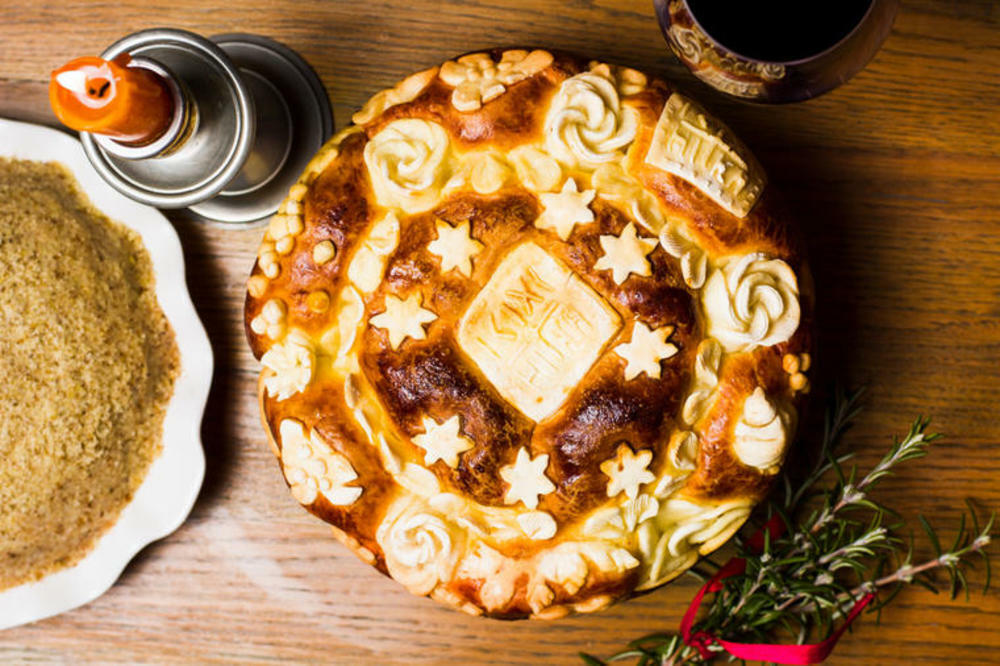

Kultura Kine
Sujeverje igra veliku ulogu u kineskoj kulturi. Zlatna i crvena boja donose sreću, ali pisanje crvenom bojom znači da se obraćate neprijatelju. Plava je boja smrti, a neparni brojevi donose nesreću. Zato ćete primetiti da restorani uglavnom imaju paran broj stolova i stolica.
Sloboda govora nije nešto što se podržava u Kini. Vi možete da pričate šta hoćete, ali da javno propagirate ili da organizujte okupljanja, to svakako ne možete.
Štapići za jelo i njihov položaj imaju ozbiljna značenja u kineskoj kulturi. Štapićima se ne treba igrati i najpametnije je da ih nakon jela ostavite na stolu. Neki položaji štapića imaju čak i utemeljenje u posmrtnim obredima.
U Kini se tradicionalno ljudima obraćaju punim imenom i prezimenom. Neretko se koriste pojmovi stari (Lao) i mlađi (Xiao) kada se obraća nekom članu porodice.

Ma šta zapadni svet mislio, Kinezi u velikoj meri podržavaju sistem ograničene slobode koji postoji u ovoj zemlji. Pitanja Tajvana, Hong Konga ili Tibeta nisu laka tema, a široko je prihvaćen stav da je strožija kontrola medija i socijalnih mreža neophodna jer se radi o društvu za koje se veruje da ne bi nikako moglo da funkcioniše po zapadnjačkom sistemu.
Srpska kultura
Tradicija srpskog naroda seže u daleku prošlost. Ona se može videti u načinu proslavljanja pojedinih narodnih i verskih praznika kao što su krsna slava, Badnji dan i Božić. Koreni običaja vezanih za ove praznike potiču još iz doba pre primanja hrišćanstva. Neki oblici tradicije će ući pod zaštitu UNESCO-a kao nematerijalna kulturna dobra. Takav primer je način izrade opanaka. Značajno kulturno dobro su i dela narodnog stvaralaštva: epske narodne pesme i lirske narodne pesme kao i mnogae druge priče, predanja, narodne izreke koje je sakupljao i zapisivao Vuk Stefanović Karadžić. Epske narodne pesme opevavaju podvige i slavne junake iz istorije srpskog naroda. Usmena predanja su se prenosila s koleno na koleno tokom turske vladavine kao jedini oblik kulturnog nasleđa.Slava je narodno-crkveni običaj i posle Vaskrsa i Božića, treći najvažniji porodični praznik, uvek povezan sa danom određenog hrišćanskog svetitelja.

Ona je toliko karakteristična za Srbe da predstavlja znak njihovog prepoznavanja i identifikacije. Ova jedinstvena forma porodične tradicije kod Srba je prisutna iz perioda pre primanja hrišćanstva kada je bila vezana za kult predaka porodice. Najčešće slave su Sveti Nikola, 19. decembar (Nikoljdan), Arhangel Mihajlo, 21. novembar (Aranđelovdan), Sveti Georgije, 6. maj (Đurđevdan), Sveti Jovan Krstitelj, 20. januar (Jovanjdan), Sveti Dimitrije Solunski, 8. novembar (Mitrovdan) i Sveti Sava, 27. januar (Savindan).
Grčki običaji
- Veliki broj Grka dobija ime po nekom od svetaca. Ukoliko je Grk dobio ime po nekom svecu, dan koji je po pravoslavnom kalendaru posvećen tom svecu, slavi se i kao njegov imendan.
- Mnoge Grkinje se udaju u ranim dvadesetim, dok se muškarci žene kasnije, najčešće u 30-im. Kroz nekoliko prošlih decenija žene su dobile veća prava, ali u grčkom društvu je i dalje jači uticaj muškaraca. Za stare Grke porodica, religija, tradicija i obrazovanje predstavljaju glavne vrednosti.
U unutrašnjosti Grčke, kao i na većini ostrva, se zadržao grčki običaji da pre venčanja mladoženja mora da zaprosi devojku i da traži dozvolu od njenog oca. Kada se dogovor postigne, poziva se sveštenik da blagosilja verenike i burme.
- Krštenje je najvažniji dan u životu pravoslavnih Grka. Sveta tajna se obavlja u prvoj godini života. Do tada beba nema ime već je jednostavno zovu “beba”. Beba se svuče i umota u beli peškir. Zatim sveštenik blagoslovi vodu za krštenje i doda maslinovo ulje koje su doneli kumovi. Zatim tri puta uranja bebu u blagoslovenu vodu, izgovarajući izabrano ime (obično se daje po babi ili dedi, najčešće sa očeve strane). Beba prima Svetu tajnu od sveštenika koji je zajedno sa bebinom odećom blagosilja maslinovim uljem koje je blagoslovio patrijarh. Zatim se beba oblači u belu odeću i sveštenik stavlja zlatni lanac sa krstom oko bebinog vrata i daje joj prvo Sveto pričešće. Posle ceremonije se organizuje proslava u porodičnoj kući ili u restoranu.
Kultura Perua
Peru je zemlja koju su nastanjivale mnoge civilizacije i ima veoma bogatu istoriju . Prva razvijena kultura bila je kultura Čavin , nazvana po arheološkom nalazištu Čavin de Huantar . Pre pojave Inka , grad Kankan je bio najrazvijeniji u toj oblasti . Carstvo Inka je nastalo oko 1200. i do 1532. godine obuhvatalo velike delove današnjih država Ekvadora , Kolumbije , Perua , Bolivije , Argentine i Čilea . Grad Kusko , smešten visoko u planinama , bio je prestonica carstva Inka . Španci su zauzeli tu državu 1532. i osnovali Vicekraljevinu Peru , koja je bila pod okriljem španske kraljevske kuće . Teritorija vicekraljevine se protezala od Paname do krajnjeg juga Amerike . U Peruu danas živi većinsko indijansko stanovništvo i glavni jezik je španski.
Ukoliko vam se ukaže prilika, posetite ovu čudesnu zemlju, istražite drevni grad Kusko, prošetajte glavnim gradom Limom, ne propustite da vidite prestonicu Inka i posetite izgubljeni grad Maču Pikču Prirodna obeležja ove daleke zemlje jesu džungla, obala i planine.

Stari kolonijalni grad Kusko, grad belih kuća i crvenih krovova, možda je i turističko mesto broj 1 celog južnoameričkog kontinenta. Zaslužuje dva-tri dana boravka, ne samo zbog šarmantnih kaldrmisanih ulica i interesantnih muzeja, već i zbog mnogih istorijskih ostataka. Ovo je ujedno i odlična baza za odlazak u posetu neverovatnom Maču Pičuu. Maču Pikču, ili „Stari vrh", najimpozantnija je ostavština Inka. Izgrađen je u 15. veku (oko 1450), na visini od oko 2.700 metara nadmorske visine. Grad je imao oko 10.000 stanovnika i bio je ograđen gigantskim zidinama. Kada su Inke sišle s vrha, osnovale su grad Kusko, a šuma je pokrila Maču Piču, koji često zovu „mrtvi grad". Glavni grad Inka zvao se Cuzco, prema reči Inka koja znači "središte". Smešten je u planini na visini od 3400m. U središtu grada je bio Hram Sunca. Mnogi ostaci Inka sačuvani su i u današnjem gradu. U razdoblju procvata grad je brojio više od 50.000 stanovnika. Grad je sagrađen na izduženoj osi u smeru severozapad-jugoistok.